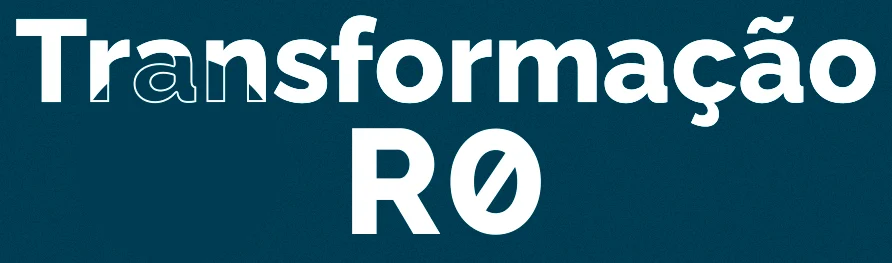

Domine o centro cirúrgico, supere a insegurança e acelere o seu crescimento profissional em 6 semanas!
Aplicação prática, com roteiro exclusivo (elaborado por 4 grandes cirurgiões especialistas), você aplicará de forma rápida e segura, mesmo que você esteja no ciclo básico ou no clínico.
Por um valor menor do que uma diária de plantão, você irá ganhar confiança e conhecimento para começar a praticar procedimentos cirúrgicos!